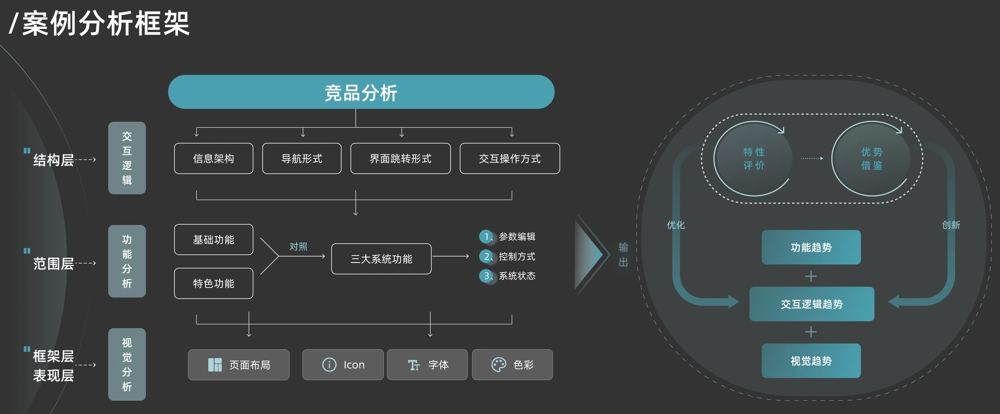
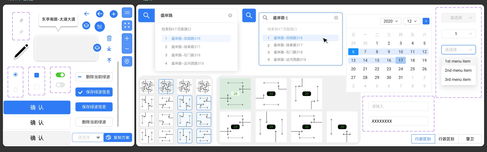

航天大为 · 复杂业务系统
让交警更快触达高频操作
为交通信号控制平台调整地图信息层级与关键配置路径，交付 30+ 高保真页面。
主要负责人 · 访谈 5 位技术人员与 2 位交警
体验操作30+ 个高保真页面与组件规范，通过客户评审后交付开发。

设计稿交互重现
把方向拖进车道
从右侧拖起一个方向图标，在左侧目标车道上松开。车道箭头会立即按来车方向更新。
车道属性
路口渠化

为什么直接在路口上改？
相同的右转图标，放到北侧或西侧车道时，箭头在图上的朝向并不一样。让操作人员直接把图标放到实际车道，修改的位置和结果就能一眼确认。
走查时我会看什么
我会请操作人员把北侧 2 号车道改为右转，再用同一图标修改西侧 26 号车道。两处箭头应分别朝左和朝下。如果在斑马线上松开，两条车道都应保持原状。
设计思路
交警在查看路口态势时，怎样进入配置任务，又能继续看清当前路口？
- 确定高频任务从访谈和竞品分析识别主要操作
- 重组入口把常用任务和路口信息放回地图场景
- 落到配置页把路口拓扑和参数操作并置
用实际任务找出问题
我作为项目主要负责人，访谈 7 位核心用户并调研 10+ 同类系统。交警需要在地图里识别路口、确认状态，并进入对应的配置任务。旧界面的标记密集、状态区分不足，使用者既要辨认目标，又要记住下一步在哪个菜单。
我把改版问题定为两件事：地图上要让相关状态更容易识别，从地图进入配置后也要保留用户正在处理的路口。
两种角色，两种判断任务
我以半结构式访谈了解 5 位技术人员与 2 位交警的操作需求，将基本信息、基础功能和特色功能分开提问。案例分析以 4 个直接竞品、1 个开源项目和 1 个可借鉴产品为样本，对照信息架构、功能和视觉呈现。


从调研证据到界面决策
| 调研发现 | 设计推导 | 界面落点 |
|---|---|---|
| 技术人员在意特征参数与路网参数，交警优先查看实时状态。 | 先在地图识别路口，再根据任务查看状态或进入设置。 | 地图与侧栏联动，保留路口上下文。 |
| 案例对比显示，常用功能层级不宜过深，视觉上也需要清楚区分功能。 | 把常用入口放到首页，将次要工具移出主要操作区。 | 地图与高频功能同屏，减少反复跳转。 |
| 访谈归纳指出，旧地图需要精简信息密度，并区分设备状态与拥堵程度。 | 先分清信息类型，再用色彩、图标和信息层级辅助扫读。 | 地图标记、状态标签和详情采用一致的识别方式。 |

从信息架构落到交互
优先处理「看态势、找路口、做配置」这条主路径，再处理低频入口。这样可以用一个真实任务检验菜单层级和页面布局是否一致。
- 把入口放到决策现场
- 地图与路口详情并置，常用任务通过浮窗或跨层快捷入口触达。使用者确认路口状态后，可以就地进入下一步。
- 配置时保留路口参照
- 路口渠化把方向图标放在右侧，操作人员可以直接拖到左侧对应车道，松开即应用。编辑逻辑灯组时，同样保留路口视图供对照。


交付与验证思路
交付了 30+ 高保真页面，并整理地图、按钮及操作控件的组件规范。方案通过客户评审后交付开发。
- 如何检查操作路径
- 选取「在地图找到目标路口并修改配置」作为走查任务。可记录入口是否容易找到、需要切换多少次页面、以及编辑时是否始终知道在操作哪个路口。
